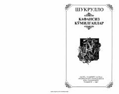

SKSovet qatag'oni va KGB zulmi haqidagi hayotiy roman.
Shukrulloning 'Kafansiz Ko'milganlar' romani sovet davridagi siyosiy qatag'onlar, hibsga olinishlar va insoniy azob-uqubatlarni tasvirlaydi. Asarda muallif o'z boshidan kechirgan voqealarni — KGB tomonidan ta'qib qilinish, so'roq va qamoq kunlarini — jonli tafsilotlar bilan bayon etadi. Roman o'sha davr zulmi ostida ezilgan odamlarning fojiasini ochib beradi.